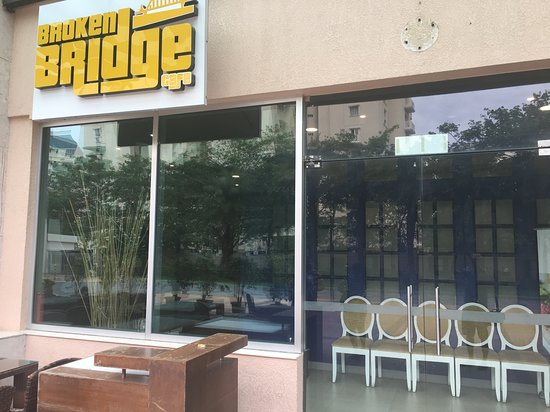

Top restaurant chains in chenni

Broken Bridge Cafe
Somerset Greenways, 94, Sathyadev Ave, MRC Nagar, Raja Annamalai Puram, Chennai, Tamil Nadu 600028
 Thalappakatti
Thalappakatti
New No.229, Old No.372, 375, NSC Bose Rd, George Town, Chennai, Tamil Nadu 600001
 Copper Chimney
Copper Chimney
Cathedral Road, Kanakasri Nagar, Gopalapuram, Chennai, Tamil Nadu 600086
 Amman mess
Amman mess
27&28,Velachery Main Road, Vijaya Nagar, Velachery, Chennai, Tamil Nadu 600042
 Sholan mess
Sholan mess
Shop No.E4, KC Food Street, MGR Main Rd, near KC Food Street, Kandanchavadi, Perungudi, Chennai, Tamil Nadu 600041
 Aryan bhavan
Aryan bhavan
No2/19, Avadi Rd, Senneer Kuppam, Poonamallee, Chennai, Tamil Nadu 600077